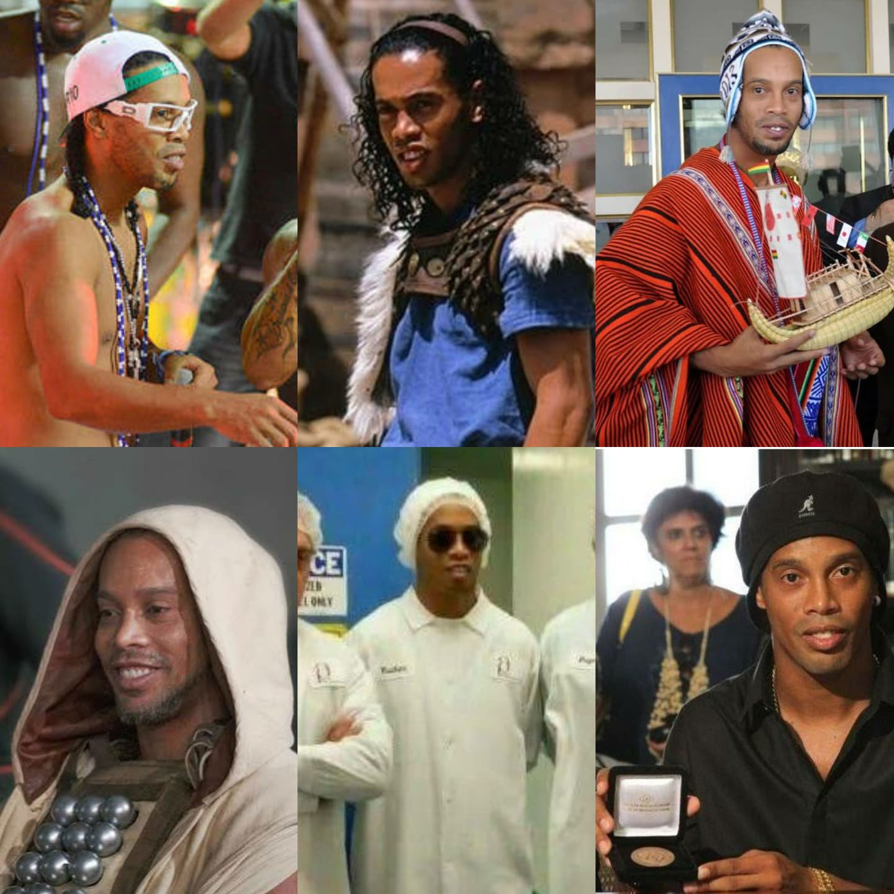

Feitiços
Que a vida do ex-jogador de futebol Ronaldinho Gaúcho é um rolê aleatório, todo mundo sabe. Mas a pergunta que não quer calar por onde anda o craque depois de se aposentar?

História
"Toda a vida, busquei chegar ao mais alto nível profissional e levar alegria para as pessoas com o meu futebol"
Ronaldinho Gaúcho é ex-jogador de futebol, eleito o melhor do mundo pela FIFA por dois anos consecutivos, em 2004 e 2005. Foi campeão do mundo pela Seleção Brasileira na Copa de 2002. Começou a carreira no Grêmio, na década de 1990, e logo chamou a atenção de times europeus. A partir dos anos 2000, conquistou prêmios para o Paris Saint-Germain e, principalmente, para o Barcelona, clube em que viveu o auge da carreira. Passou também pelo Milan antes de voltar ao Brasil pelo Flamengo, em 2011. No ano seguinte, foi contratado pelo Atlético Mineiro. Entre 2014 e 2015, atuou no defendeu o clube mexicano Querétaro. Em 2018, anunciou a aposentadoria dos campos. Namora Beatriz Souza desde 2017. Ele viveu em união simultânea com Beatriz e Priscilla Coelho, com quem terminou em 2018 e que o acusou de agressão. Em 2020, ele passou seis meses preso no Paraguai por usar documentos falsos.
Títulos

Ronaldinho Gaúcho conquistou 12 títulos na carreira, entre eles, uma vez a Recopa Sul-Americana, uma vez a Libertadores, uma vez o Campeonato Italiano, duas vezes a Supercopa da Espanha, duas vezes o Campeonato Espanhol, uma vez a Champions League, uma vez a Copa das Confederações, uma vez a Copa do Mundo sub17, uma vez a Copa América e uma vez a Copa do Mundo.